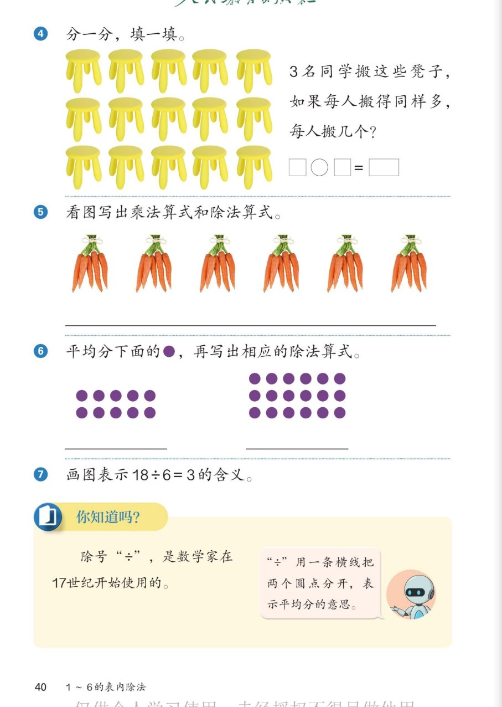

🔊 1~6的表内除法 · 课本第 40 页 · 练一练 4~7 与你知道吗
人教版《数学》二年级上册 · 有声图文带读 · 先想后看解析
题数
6
认知
2
强化
3
拓展
1
本页重点
搬凳子·一乘两除·除号的含义
🎧 分两步学：
① 解析教材图片
——纯声音读图，读到哪一块哪一块闪动提示；关键处先倒计时让你思考，再在图片下方给出解析并朗读。
② 分层提问练习
——六道分层题（认知 / 强化 / 拓展），先思考再展开解析、朗读参考答案；这一步不再回到图片。
也可以随时点任意一句话、图上任意一块单独听；点课本文字卡还会展开答案。
教材图片（点块听读，读到哪块哪块闪）

📖 人教版《数学》二年级上册 · 课本第 40 页 练一练 · 图片仅供个人学习，版权归人民教育出版社所有
🤔 想一想（点我可跳过）
课本的文字（点句子：听读 + 看答案）
课本第 4 题
15 个凳子 3 人搬，每人搬（5）个
看答案 ▾
凳子 3 行、每行 5 个，共
15
个（3×5=15）。
平均分给 3 人：每人
5
个。
算式：
15÷3＝5
。
课本第 5 题
6 捆胡萝卜（每捆 5 根）：写乘法与除法算式
看答案 ▾
乘法：
5×6＝30
（或 6×5＝30）；
除法：
30÷5＝6
、
30÷6＝5
。
🌈 一道乘法算式可以写出两道除法算式
课本第 6 题
平均分圆点（左 10 个 · 右 18 个），写除法算式
看答案 ▾
左边
10
个：
10÷5＝2
（每份 5 个分 2 份）或
10÷2＝5
（平均 2 份每份 5 个）；
右边
18
个：
18÷6＝3
（每份 6 个分 3 份）或
18÷3＝6
（平均 3 份每份 6 个）。
🌈 分法不唯一，只要每份同样多、正好分完
课本第 7 题 + 你知道吗
画图表示 18÷6=3 · 除号的来历
看答案 ▾
画图：
画 18 个圆，每 6 个圈一份，正好圈出
3
份（18÷6＝3）；
除号：
数学家在
17 世纪
开始使用"÷"——一条横线把两个圆点分开，表示
平均分
。
分层提问练习（先想后看解析）
🪑
认知
15 个凳子 3 名同学平均搬，每人搬几个？
看解析
🤔 想一想
解析：
每人
5
个：想 3×5=15。
算式：
15÷3＝5
。
🥕
认知
6 捆胡萝卜每捆 5 根，乘法算式怎么写？一共多少根？
看解析
🤔 想一想
解析：
乘法算式：
5×6＝30
（或 6×5＝30）。
一共有
30
根胡萝卜。
✖️
强化
由 5×6=30 可以写出哪两道除法算式？
看解析
🤔 想一想
解析：
30÷5＝6
：每 5 根一捆，捆了 6 捆；
30÷6＝5
：平均 6 份，每份 5 根。
💡 乘除法是一家人：一乘配两除
🟣
强化
左边 10 个圆点可以怎样平均分？写出除法算式。
看解析
🤔 想一想
解析：
平均分 2 份，每份 5 个：
10÷2＝5
；
每份 5 个，分 2 份：
10÷5＝2
。
💡 2×5=10：只有这两种分法
🎨
强化
怎样画图表示 18÷6=3 的含义？
看解析
🤔 想一想
解析：
画法一：画 18 个圆，
每 6 个圈一份
，圈出 3 份；
画法二：18 个圆
平均分成 3 份
，每份 6 个。
💡 两种画法都表示 18÷6＝3
🌈
拓展
除号"÷"为什么写成一条横线加两个圆点？
看解析
🤔 想一想
解析：
"÷"用一条
横线
把两个
圆点
分开，表示
平均分
的意思。
它也像把一根小棒
平均分成两截
——上下一样多。
🌈 除号是数学家在 17 世纪开始使用的
① 解析教材图片
② 分层提问练习
⏹ 停止
纯声音 + 高亮跟随 · 想好才出解析
← 返回导航